Adquisición forense en caliente de un sistema Windows con CMD y PowerShell
DESKTOP-13NGL3L · Windows 11 Pro (build 26200) · Lenovo 20VLS0U500.
Comandos nativos de CMD y PowerShell + NetUsers.exe v1.23.
15/11/2026, 09:19 p. m. (UTC−06:00).
La adquisición se realizó en caliente (live response) sobre el equipo en análisis, un portátil Lenovo con Windows 11 Pro identificado como DESKTOP-13NGL3L, con la sesión del usuario aaron abierta. Se usaron únicamente comandos nativos del sistema (CMD y PowerShell) más la utilidad NetUsers.exe proporcionada para la práctica; los comandos que requieren privilegios elevados (netstat -anob, wevtutil, ipconfig /displaydns) se ejecutaron desde una consola de PowerShell como administrador (ruta C:\WINDOWS\system32).
El orden de ejecución siguió el principio de orden de volatilidad (RFC 3227): primero se fijó la fecha y hora, después los datos que desaparecen al apagar o reiniciar el equipo (procesos, servicios, sesiones, conexiones, cachés DNS y ARP, historial de comandos) y al final la información más persistente (configuración del sistema, tareas programadas, registros de eventos, fichero hosts y sistema de archivos). Cada salida se documentó con una captura de pantalla para conservar la evidencia de lo observado en el momento.
Get-DateGet-Date devuelve la fecha y hora actuales según el reloj del sistema. Es lo primero que se registra porque sirve como referencia de todo lo que se adquiere después; en CMD el equivalente son date /t y time /t.
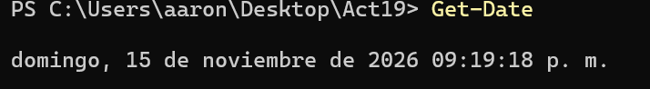
Se abrió PowerShell en la carpeta de trabajo C:\Users\aaron\Desktop\Act19 y se ejecutó Get-Date como primer paso de la adquisición.
Resultado: domingo, 15 de noviembre de 2026, 09:19:18 p. m. (zona horaria UTC−06:00, Ciudad de México, según systeminfo).
Importancia forense: permite construir la línea de tiempo del incidente y detectar desfases entre el reloj del equipo y una fuente de hora confiable; si el atacante alteró la hora del sistema, todos los registros quedarían desplazados.
Get-ProcessGet-Process lista todos los procesos activos con su identificador (Id/PID), memoria utilizada (NPM, PM, WS), tiempo de CPU consumido y la sesión a la que pertenecen (SI). En CMD el equivalente es tasklist.
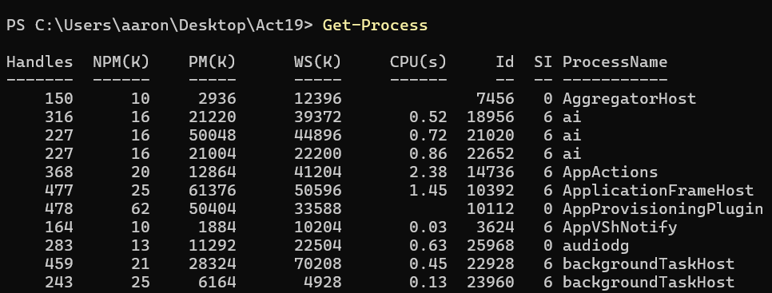
Se ejecutó Get-Process en la misma consola; la captura muestra el inicio de la lista, ordenada alfabéticamente por nombre de proceso.
Resultado: se observan procesos del sistema en la sesión 0 (p. ej. AggregatorHost, AppProvisioningPlugin, audiodg) y procesos del usuario en la sesión 6 (ai, AppActions, ApplicationFrameHost, backgroundTaskHost). La columna SI permite separar lo que corre como servicio de lo que lanzó el usuario interactivo.
Importancia forense: los procesos son la evidencia más volátil; un malware activo aparece aquí aunque no deje rastro en disco. Los PID obtenidos se cruzan después con netstat (puntos 8 y 9) para saber qué proceso abrió cada conexión.
net start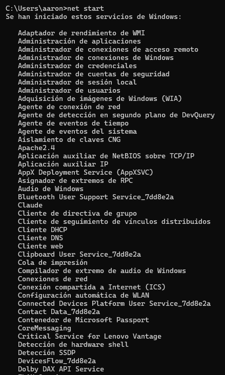
Primero se abrió el Símbolo del sistema y se ejecutó net start, que solo enumera los servicios que están iniciados, mostrando su nombre para mostrar (traducido al español).
Get-Service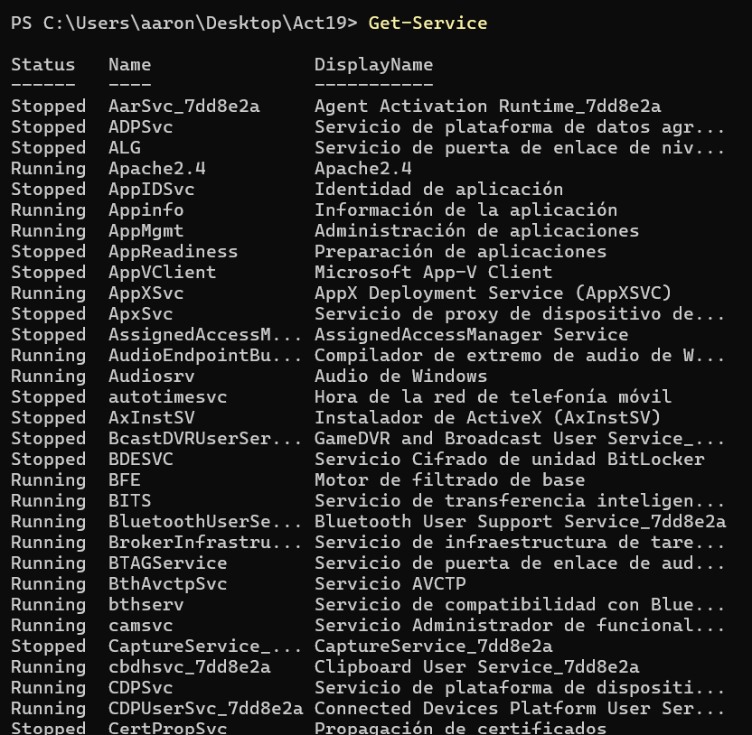
Después se ejecutó Get-Service en PowerShell, que enumera todos los servicios registrados en el equipo, estén en ejecución o detenidos.
Diferencias apreciadas:
| Aspecto | net start (CMD) | Get-Service (PowerShell) |
|---|---|---|
| Alcance | Solo servicios en ejecución | Todos los servicios (Running y Stopped) |
| Columnas | Solo el nombre para mostrar | Status, Name (nombre interno) y DisplayName |
| Nombre | Localizado (p. ej. "Audio de Windows") | Nombre interno corto (p. ej. Audiosrv) |
| Tipo de salida | Texto plano | Objetos que se pueden filtrar, ordenar y exportar |
Análisis: ambos comandos coinciden en los servicios activos, pero PowerShell ofrece una visión más completa y útil para el análisis: el nombre interno es el que aparece en el registro (HKLM\SYSTEM\CurrentControlSet\Services) y en los logs, y al incluir los servicios detenidos permite detectar servicios instalados por un atacante que se arrancan solo bajo demanda. Además su salida se puede filtrar (Get-Service | Where-Object Status -eq Running) o exportar a CSV para documentarla.
Hallazgos: destacan servicios que no son propios de una estación de trabajo estándar: Apache2.4 (servidor web) en ejecución, así como servicios de terceros como Claude, Critical Service for Lenovo Vantage o Dolby DAX API Service. Los servicios con sufijo _7dd8e2a (p. ej. BluetoothUserService_7dd8e2a) son servicios por usuario legítimos de Windows; el sufijo identifica la sesión. El servidor web es legítimo en un equipo de desarrollo, pero amplía la superficie de ataque y debe justificarse.
.\NetUsers.exeNetUsers.exe (v1.23, OptimumX) muestra los usuarios con sesión iniciada en un equipo local o remoto. Al no ser un comando nativo, en PowerShell se invocó con el prefijo .\ desde la carpeta donde se guardó, ya que PowerShell no ejecuta binarios de la carpeta actual sin ruta explícita.
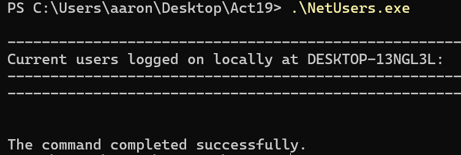
Se ejecutó la herramienta sin parámetros sobre el equipo local DESKTOP-13NGL3L.
Resultado: la herramienta terminó correctamente pero no listó ningún usuario, aunque la sesión de aaron estaba abierta (lo demuestran la ruta del prompt y los procesos de la sesión 6 en Get-Process).
Análisis: NetUsers es una utilidad de 2007 pensada para Windows NT/2000/XP; en Windows 11, y sin consola elevada, no consigue enumerar las sesiones, por lo que un resultado vacío no prueba que no haya usuarios conectados. En una investigación real este resultado se corroboraría con comandos nativos como query user o Get-CimInstance Win32_LoggedOnUser.
.\NetUsers.exe /historyCon el modificador /history la herramienta muestra las cuentas que han iniciado sesión en el pasado junto con la fecha de su último inicio de sesión (columna Last Logon).
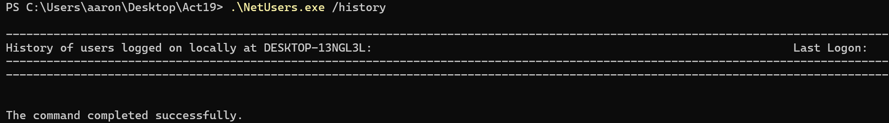
Se volvió a ejecutar NetUsers, ahora con /history, en la misma consola.
Resultado: tampoco se obtuvieron registros históricos.
Análisis: por la misma incompatibilidad del punto anterior, el resultado no es concluyente. Como fuentes alternativas para el historial de inicios de sesión están los perfiles en HKLM\SOFTWARE\Microsoft\Windows NT\CurrentVersion\ProfileList, las carpetas de C:\Users y, sobre todo, el registro de seguridad (eventos 4624 de inicio de sesión correcto y 4625 de intento fallido). Esta limitación es en sí un hallazgo: siempre se debe validar una herramienta contra el sistema en el que se usa.
ipconfig /allMuestra la configuración completa de cada adaptador de red: nombre del equipo, tipo de nodo NetBIOS, descripción del hardware, dirección física (MAC), direcciones IPv4/IPv6, máscara, DHCP y DNS.
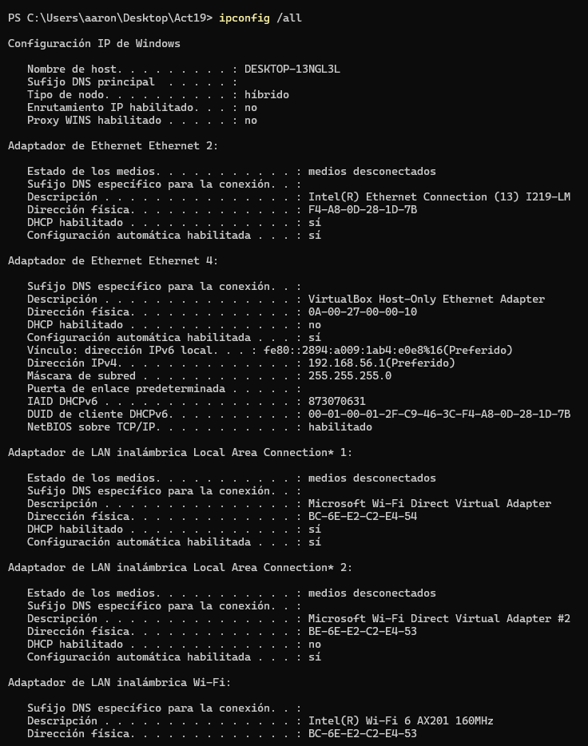
Se ejecutó ipconfig /all y se revisó la información de cada adaptador presente en el equipo.
Resultado: nombre de host DESKTOP-13NGL3L, tipo de nodo híbrido, sin enrutamiento IP ni proxy WINS. Adaptadores: Ethernet 2 (Intel I219-LM, MAC F4-A8-0D-28-1D-7B) desconectado; Ethernet 4 (VirtualBox Host-Only, MAC 0A-00-27-00-00-10) con IP 192.168.56.1/24; dos adaptadores virtuales Wi-Fi Direct desconectados; y la tarjeta Wi-Fi Intel AX201 (MAC BC-6E-E2-C2-E4-53), que es la conexión activa (IP 192.168.1.68, servidor DHCP 192.168.1.254).
Importancia forense: identifica por qué interfaz se comunica el equipo y con qué direcciones, y revela la presencia de software de virtualización (VirtualBox), que podría usarse para ocultar actividad dentro de máquinas virtuales.
nbtstat -nLista los nombres NetBIOS registrados localmente en cada interfaz, con su sufijo (tipo de servicio) y su estado.
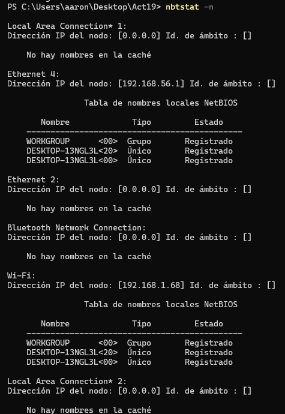
Se ejecutó nbtstat -n; solo las interfaces con IP (Ethernet 4 y Wi-Fi) muestran tabla de nombres.
Resultado: en 192.168.56.1 (Ethernet 4) y 192.168.1.68 (Wi-Fi) están registrados WORKGROUP <00> de tipo Grupo, DESKTOP-13NGL3L <00> (servicio de estación de trabajo) y DESKTOP-13NGL3L <20> (servicio de servidor de archivos), todos en estado Registrado.
Importancia forense: confirma que el equipo pertenece a un grupo de trabajo y no a un dominio, y que el servicio de servidor (sufijo <20>) está anunciado en la red, lo que permite a otros equipos ver y acceder a sus recursos compartidos.
netstat -anoMuestra todas las conexiones y puertos (-a), en formato numérico sin resolver nombres (-n) e incluyendo el PID del proceso propietario (-o).
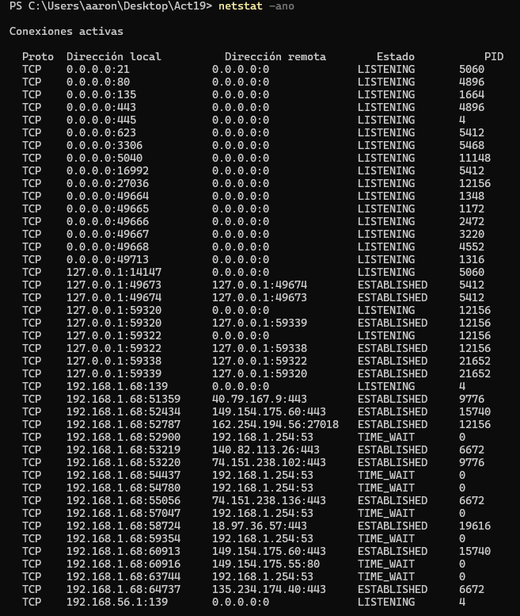
Se ejecutó netstat -ano y se separaron los puertos en escucha (LISTENING) de las conexiones activas (ESTABLISHED).
Puertos en escucha relevantes: 21 (FTP, PID 5060), 80 y 443 (HTTP/HTTPS, PID 4896), 135 (RPC), 445 (SMB, PID 4 = System), 623 y 16992 (PID 5412), 3306 (MySQL, PID 5468), 27036 (PID 12156) y los puertos RPC dinámicos 49664-49668. Varios escuchan en 0.0.0.0, es decir, en todas las interfaces.
Conexiones establecidas: desde 192.168.1.68 hacia direcciones externas por el puerto 443 (40.79.167.9, 74.151.238.102 y 74.151.238.136 en rangos de Microsoft; 140.82.113.26 de GitHub; 149.154.175.60 de Telegram; 18.97.36.57 y 135.234.174.40) y hacia 162.254.194.56:27018 (Valve/Steam). Las conexiones TIME_WAIT a 192.168.1.254:53 son consultas DNS al router.
Importancia forense: es la evidencia clave para detectar comunicación con servidores de mando y control o exfiltración de datos. Ninguna conexión resultó anómala para el uso del equipo, pero cada IP externa debería verificarse en un servicio de reputación.
netstat -anobIgual que el anterior, pero con -b, que muestra el ejecutable responsable de cada conexión. Requiere una consola como administrador; por eso se ejecutó desde PowerShell elevado.
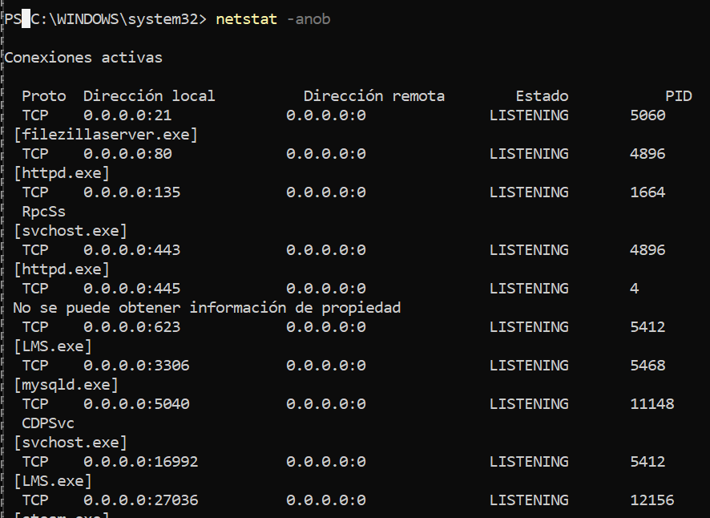
Se abrió PowerShell como administrador y se ejecutó netstat -anob para asociar cada puerto con su programa.
Resultado: puerto 21 → filezillaserver.exe; 80 y 443 → httpd.exe (Apache); 135 → RpcSs en svchost.exe; 445 → System (no se puede obtener información de propiedad porque lo atiende el kernel); 623 y 16992 → LMS.exe (Intel Local Management Service, parte de Intel AMT); 3306 → mysqld.exe; 5040 → CDPSvc en svchost.exe; 27036 → steam.exe.
Análisis: el equipo funciona como servidor FTP, web y de base de datos expuesto en todas sus interfaces. En un equipo de desarrollo esto tiene explicación, pero en un incidente es exactamente lo que se busca: un servicio inesperado escuchando sería una posible puerta trasera.
ipconfig /displaydnsMuestra la caché del resolvedor DNS: los nombres de dominio que el equipo resolvió recientemente, el tipo de registro, su tiempo de vida (TTL) y la dirección obtenida.
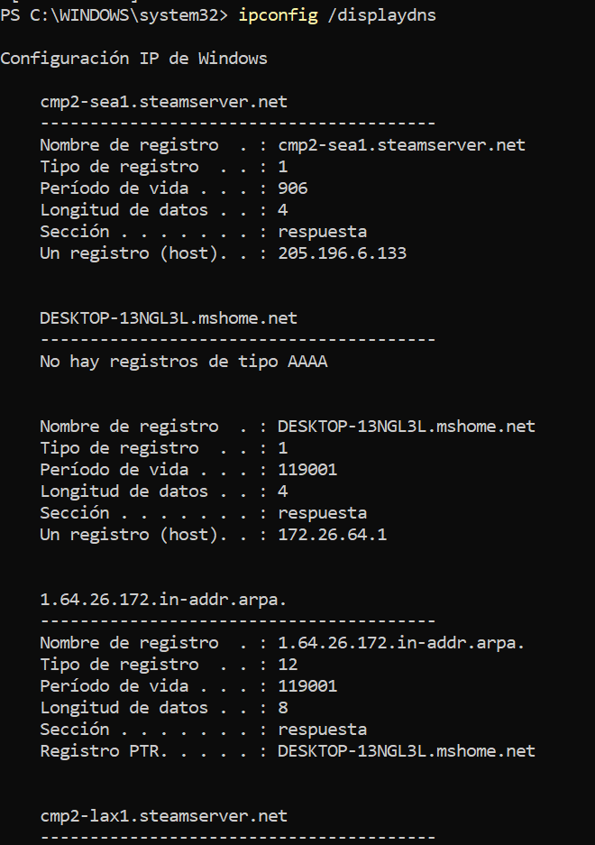
Se ejecutó ipconfig /displaydns en la consola elevada y se revisaron las primeras entradas de la caché.
Resultado: aparecen cmp2-sea1.steamserver.net (205.196.6.133) y cmp2-lax1.steamserver.net (servidores de Steam), DESKTOP-13NGL3L.mshome.net (172.26.64.1, red virtual que Windows crea para Hyper-V/WSL o Conexión compartida) y su registro inverso PTR 1.64.26.172.in-addr.arpa.
Importancia forense: la caché DNS revela los sitios visitados aunque se haya borrado el historial del navegador, y sirve para detectar dominios de malware. Es muy volátil: cada entrada caduca al terminar su TTL y se pierde al reiniciar o con ipconfig /flushdns.
arp -aMuestra la tabla ARP, que relaciona las direcciones IP (lógicas) con las direcciones MAC (físicas) de los equipos con los que el sistema se comunicó recientemente en la red local.
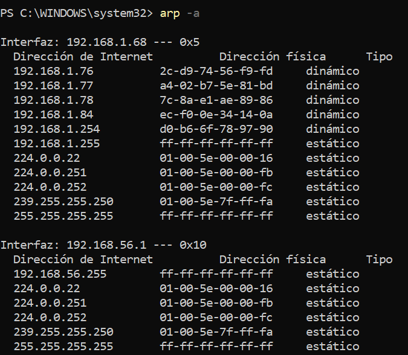
Se ejecutó arp -a; la tabla aparece separada por interfaz (Wi-Fi y VirtualBox).
Resultado: en la interfaz 192.168.1.68 hay entradas dinámicas para 192.168.1.76, .77, .78, .84 y para la puerta de enlace 192.168.1.254 (MAC d0-b6-6f-78-97-90); el resto son entradas estáticas de broadcast y multicast. La interfaz 192.168.56.1 (VirtualBox) solo tiene entradas estáticas.
Análisis: hay cuatro dispositivos vecinos en la red local con los que hubo comunicación reciente. Cada IP tiene una MAC distinta y la del router no se repite, por lo que no hay indicios de envenenamiento ARP (ARP spoofing / man-in-the-middle).
netsh wlan show profilesLista los perfiles de redes inalámbricas guardados por Windows, es decir, las redes a las que el equipo se ha conectado y cuya configuración conserva.
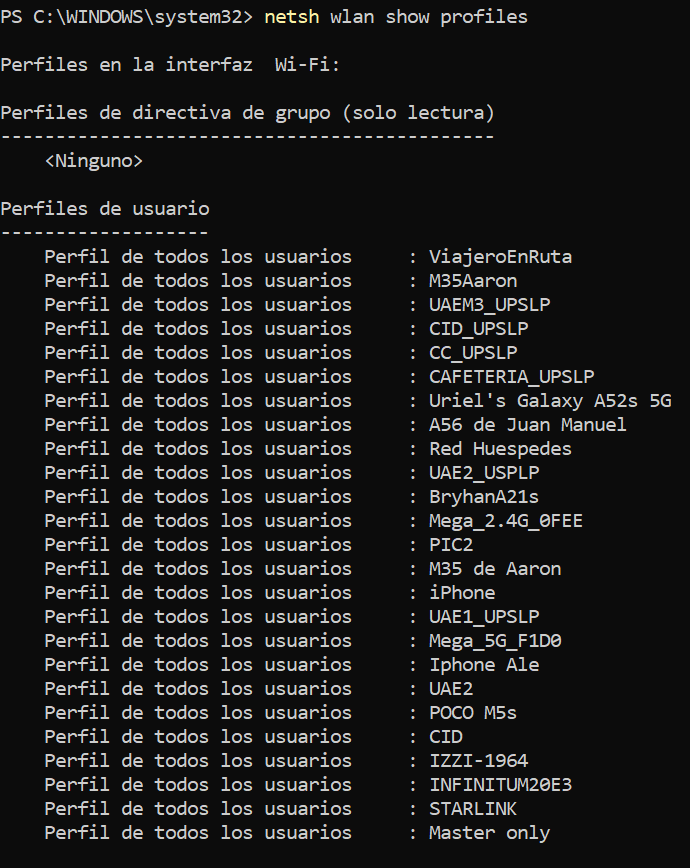
Se ejecutó netsh wlan show profiles sobre la interfaz Wi-Fi.
Resultado: no hay perfiles impuestos por directiva de grupo y hay al menos 25 perfiles de usuario: redes de la universidad (UAEM3_UPSLP, CID_UPSLP, CC_UPSLP, CAFETERIA_UPSLP, UAE1_UPSLP, UAE2_USPLP, UAE2, CID, PIC2), redes domésticas o de proveedores (IZZI-1964, INFINITUM20E3, Mega_2.4G_0FEE, Mega_5G_F1D0, STARLINK), puntos de acceso de teléfonos (M35Aaron, M35 de Aaron, iPhone, Iphone Ale, POCO M5s, BryhanA21s, Uriel's Galaxy A52s 5G, A56 de Juan Manuel) y otras (ViajeroEnRuta, Red Huespedes, Master only).
Importancia forense: permite reconstruir los lugares donde estuvo el equipo y las personas o dispositivos con los que se relacionó, información útil para ubicar al sospechoso. Con netsh wlan show profile name="<red>" se puede ver el detalle de cada perfil.
Get-History | Get-Content (Get-PSReadlineOption).HistorySavePathGet-History muestra solo los comandos de la sesión actual de PowerShell; el historial persistente lo guarda el módulo PSReadLine en el archivo ConsoleHost_history.txt, cuya ruta devuelve (Get-PSReadlineOption).HistorySavePath. En CMD solo existe doskey /history, que se pierde al cerrar la ventana.
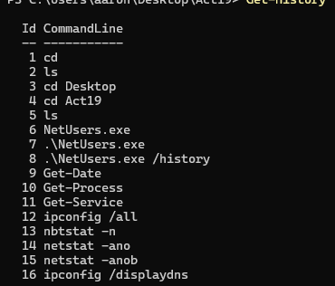
Get-History en la consola de usuario lista los 16 comandos ejecutados durante esta práctica.
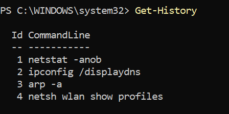
En la consola de administrador, Get-History solo muestra 4 comandos: cada sesión de PowerShell tiene su propio historial en memoria.
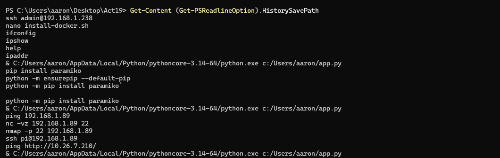
Se leyó el archivo de historial persistente de PSReadLine, que conserva comandos de sesiones anteriores.
Análisis: el historial persistente muestra actividad previa a la adquisición: conexiones SSH (ssh admin@192.168.1.238, ssh pi@192.168.1.89), la edición de un script install-docker.sh, instalación de la librería paramiko (SSH desde Python) y comprobaciones del puerto 22 con nc -vz y nmap -p 22 sobre 192.168.1.89. En un equipo comprometido, esta secuencia (descubrimiento de puertos y acceso remoto a otros equipos) sería un indicio de reconocimiento y movimiento lateral; aquí corresponde a prácticas de clase.
net useMuestra las conexiones a recursos de red y las unidades de red asignadas a una letra (p. ej. Z: → \\servidor\carpeta).
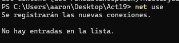
Se ejecutó net use en la consola.
Resultado: "No hay entradas en la lista": el equipo no tiene unidades de red mapeadas.
Importancia forense: una unidad mapeada indica a qué servidores o recursos accedía el usuario y puede ser el destino de datos exfiltrados o el origen de malware; su ausencia descarta esa vía en el momento de la adquisición.
net share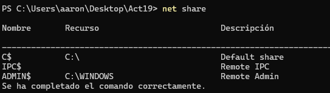
Se ejecutó net share para listar las carpetas que el equipo comparte en la red.
Get-SmbShare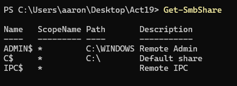
Se comprobó el mismo resultado con Get-SmbShare, que además muestra el ámbito (ScopeName) de cada recurso.
Resultado: solo existen los recursos administrativos predeterminados: C$ (raíz de C:\), ADMIN$ (C:\WINDOWS) e IPC$ (comunicación entre procesos remota). No hay carpetas compartidas creadas por el usuario.
Importancia forense: los atacantes usan ADMIN$ y C$ para moverse entre equipos (por ejemplo con PsExec) y suelen crear recursos compartidos nuevos para extraer información. No se encontraron recursos anómalos.
systeminfoReúne en una sola salida la información del sistema operativo, del hardware, de la red, de las actualizaciones instaladas y de los tiempos de instalación y arranque.
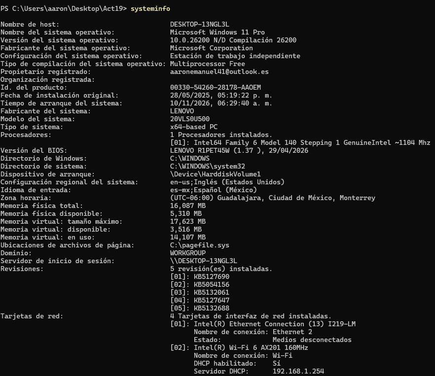
Se ejecutó systeminfo y se revisaron los campos más relevantes para la investigación.
Resultado: Microsoft Windows 11 Pro, versión 10.0.26200 (compilación 26200), estación de trabajo independiente; propietario registrado con una cuenta Microsoft; instalado el 28/05/2025 a las 05:19:22 p. m.; último arranque el 10/11/2026 a las 06:29:40 a. m. (el equipo llevaba unos cinco días encendido); fabricante Lenovo, modelo 20VLS0U500, x64, procesador Intel (Family 6 Model 140), BIOS R1PET45W 1.37 del 29/04/2026; zona horaria UTC−06:00; 16 087 MB de RAM; grupo de trabajo WORKGROUP; 5 actualizaciones instaladas (KB5127690, KB5054156, KB5132061, KB5127647, KB5132688) y 4 tarjetas de red. También indica que hay un hipervisor activo.
Importancia forense: identifica de forma única el equipo para la cadena de custodia, el nivel de parches (para saber a qué vulnerabilidades estaba expuesto) y el tiempo de arranque, que delimita qué evidencia volátil puede existir desde el último reinicio.
schtasks /query /fo LIST /vConsulta todas las tareas programadas en formato de lista (/fo LIST) y con todos sus detalles (/v): programa que ejecutan, usuario, frecuencia, última ejecución y resultado.
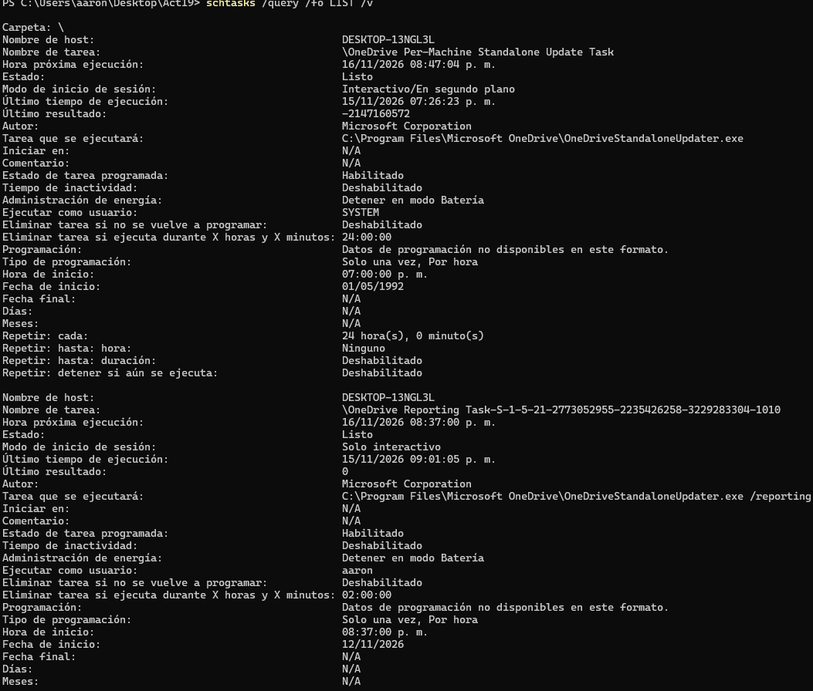
Se ejecutó schtasks con salida detallada; la captura muestra las dos primeras tareas de la carpeta raíz.
Resultado: OneDrive Per-Machine Standalone Update Task, autor Microsoft Corporation, ejecuta C:\Program Files\Microsoft OneDrive\OneDriveStandaloneUpdater.exe como SYSTEM cada 24 horas (último resultado −2147160572, un código de error del actualizador); y OneDrive Reporting Task, que ejecuta el mismo programa con /reporting bajo el usuario aaron (SID terminado en -1010).
Importancia forense: las tareas programadas son uno de los mecanismos de persistencia más usados por el malware. Se revisa el autor, la ruta del ejecutable y la cuenta con la que corre; estas dos son legítimas (firmadas por Microsoft y ubicadas en Program Files), pero conviene revisar la lista completa en busca de rutas en carpetas temporales o de usuario.
wevtutil epl System $env:USERPROFILE\Desktop\System.evtxwevtutil (Windows Events Command Line Utility) con la opción epl (export-log) copia el registro de eventos System completo a un archivo .evtx en el Escritorio del usuario, sin modificar el original.
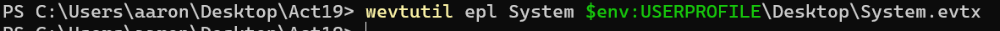
Se ejecutó wevtutil desde PowerShell; el comando no devuelve mensaje cuando termina correctamente.
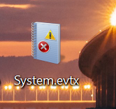
El archivo System.evtx apareció en el Escritorio del usuario investigado.
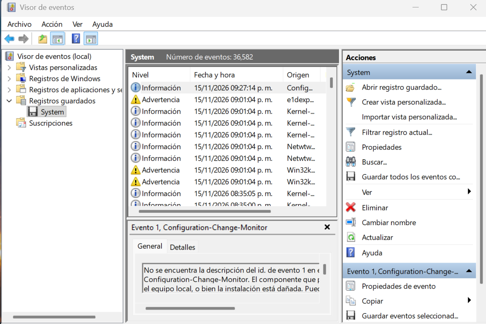
Para comprobar la exportación, el archivo se abrió en el Visor de eventos (Abrir registro guardado): contiene 36 582 eventos, el más reciente del 15/11/2026 a las 09:27:14 p. m.
Importancia forense: el registro System contiene arranques, apagados, instalación de servicios y errores del sistema. Exportarlo protege la evidencia, ya que un atacante puede borrar los registros (eventos 104 y 1102). Con el mismo comando se pueden exportar Security (inicios de sesión) y Application.
type C:\Windows\System32\drivers\etc\hostsMuestra el contenido del fichero hosts, que Windows consulta antes que el DNS para resolver nombres de dominio.
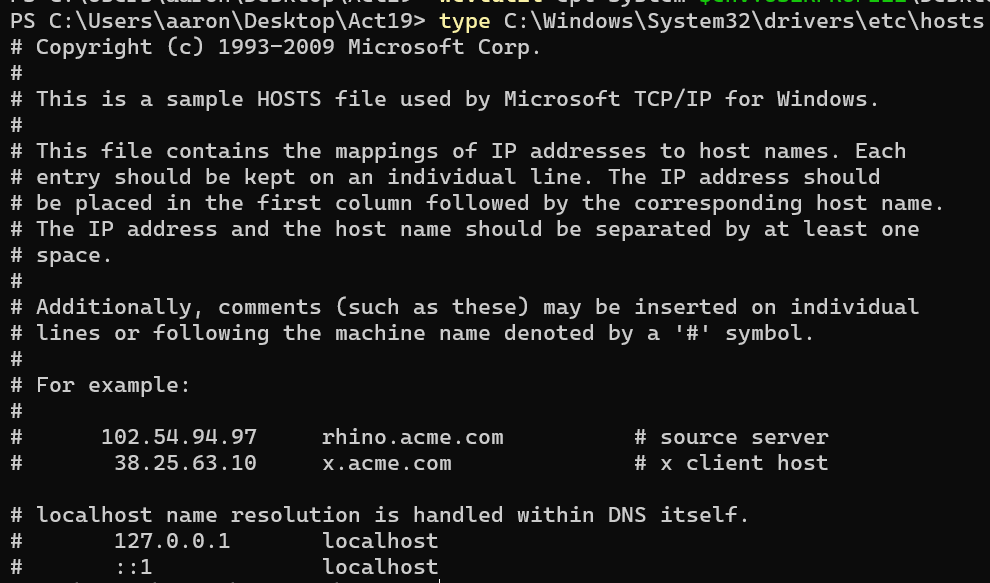
Se mostró el contenido del fichero hosts en la consola con type.
Resultado: el archivo solo contiene el texto de ejemplo de Microsoft; todas las líneas están comentadas con #, incluidas las de localhost, por lo que no hay ninguna redirección activa.
Importancia forense: el malware modifica este fichero para desviar dominios legítimos (bancos, antivirus, actualizaciones) hacia servidores maliciosos o para bloquearlos. Su contenido limpio descarta esa manipulación.
Get-ChildItem -Path $env:USERPROFILE -Recurse -ErrorAction SilentlyContinue | Sort-Object CreationTime | Select-Object FullName, CreationTime | Out-File $env:USERPROFILE\Desktop\arbol_directorios.txtGet-ChildItem -Recurse recorre todo el árbol de carpetas y archivos; Sort-Object CreationTime lo ordena de la fecha de creación más antigua a la más reciente; Select-Object deja la ruta completa y la fecha; y Out-File guarda el resultado en un archivo de texto, ya que la salida es demasiado larga para la consola. Se limitó al perfil del usuario ($env:USERPROFILE) para que el recorrido terminara en un tiempo razonable.
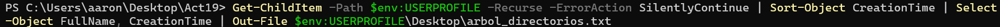
Se ejecutó el comando con la salida redirigida al Escritorio.
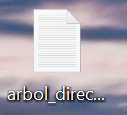
El archivo arbol_directorios.txt se generó correctamente en el Escritorio.
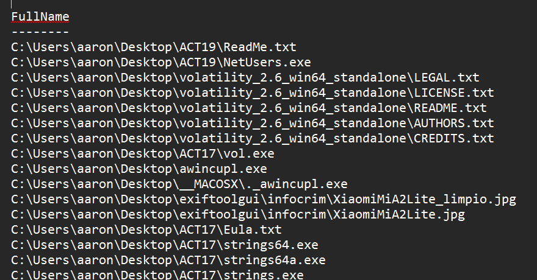
Se abrió el archivo y se revisaron las primeras entradas, que corresponden a los elementos con fecha de creación más antigua.
Análisis: llama la atención que los primeros archivos sean ReadMe.txt y NetUsers.exe de esta misma práctica, seguidos de Volatility 2.6 y de herramientas de las actividades 17 y 18. Esto ocurre porque al extraer un .zip se conservan las fechas originales de los archivos (NetUsers es de 2007), es decir, la fecha de creación no siempre refleja cuándo llegó un archivo al equipo. Es el mismo efecto que buscan las técnicas antiforenses de timestomping, por lo que las fechas deben contrastarse con otras fuentes (MFT, Prefetch, registros). Además, las rutas largas desplazaron la columna CreationTime fuera del ancho del archivo; para conservarla conviene usar Export-Csv o Format-Table -AutoSize.
Se realizó una adquisición en caliente del equipo DESKTOP-13NGL3L (Windows 11 Pro) el 15/11/2026 a partir de las 09:19 p. m., siguiendo el orden de volatilidad. Se recolectaron 20 elementos de evidencia: fecha y hora, procesos, servicios, sesiones de usuario, configuración de red, nombres NetBIOS, conexiones y su relación con aplicaciones, caché DNS, tabla ARP, perfiles Wi-Fi, historial de comandos, unidades mapeadas, recursos compartidos, información del sistema, tareas programadas, el registro de eventos System exportado, el fichero hosts y el listado del sistema de archivos ordenado por fecha de creación.
| Aspecto | CMD | PowerShell |
|---|---|---|
| Salida | Texto plano, difícil de procesar | Objetos con propiedades; se filtran, ordenan y exportan |
| Alcance | Más limitado (net start: solo servicios activos) | Más completo (Get-Service: todos los servicios) |
| Historial | doskey /history, solo en memoria | Get-History en memoria y archivo persistente de PSReadLine |
| Ejecutables locales | Se ejecutan por nombre (NetUsers.exe) | Requieren ruta explícita (.\NetUsers.exe) |
| Uso forense | Rápido y disponible en cualquier Windows | Mejor para automatizar y documentar (Export-Csv, Out-File) |
Ambos intérpretes ejecutan los comandos nativos (ipconfig, netstat, arp, net) con resultados idénticos; la diferencia está en los cmdlets propios de PowerShell, que entregan información más estructurada y completa. Sin embargo, PowerShell también es una herramienta muy usada por atacantes, por lo que su historial es una fuente de evidencia valiosa.
En este laboratorio el equipo es de uso personal y académico, y cada hallazgo tiene una explicación legítima; sin embargo, en un sistema realmente comprometido los siguientes puntos serían los primeros a investigar:
No se encontraron indicios de manipulación del fichero hosts, envenenamiento ARP, recursos compartidos ocultos ni unidades de red mapeadas.